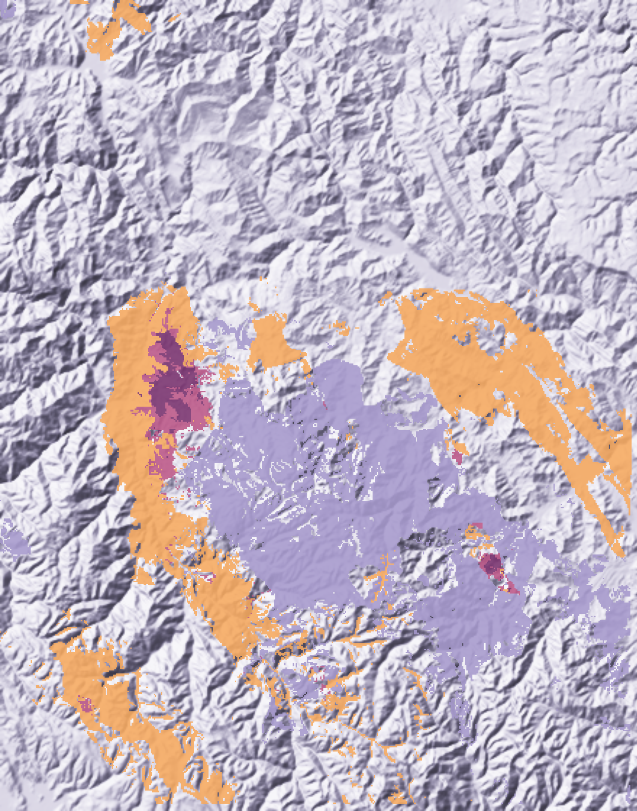
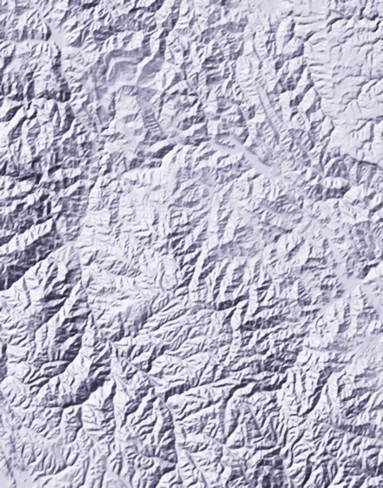
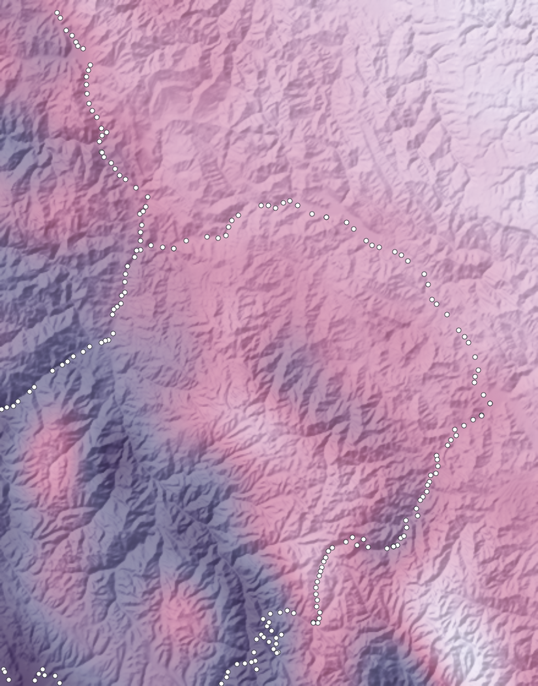
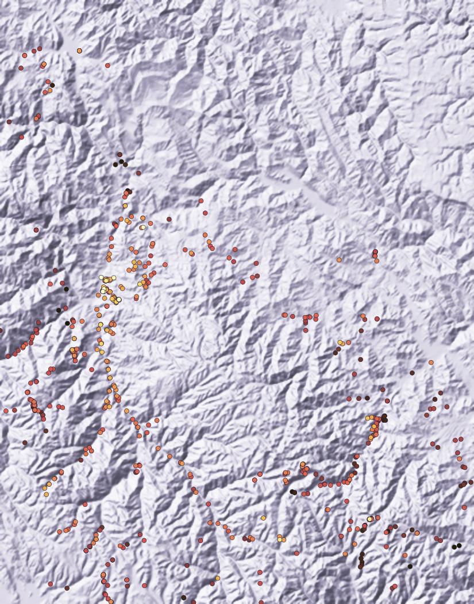

Trabajo Final de Geocomputación, PUCP 2026-II
Prospectivity for
"U - REE"
Peru Central
Validación de fuentes públicas, 40 variables integradas y cinco modelos de aprendizaje automático para uranio y
tierras raras en la Cordillera Oriental de Junín y Pasco.
Carlos Manuel Gutiérrez Cruzado / Félix Bryan Cordero Escobar
Pontificia Universidad Católica del Perú, Lima

U y tierras raras
Solo uranio
Solo tierras raras

RelieveCopernicus DEM GLO-90

GravedadModelo XGM2019e y 192 estaciones de INGEMMET

Uranio en roca606 rocas de cinco fuentes